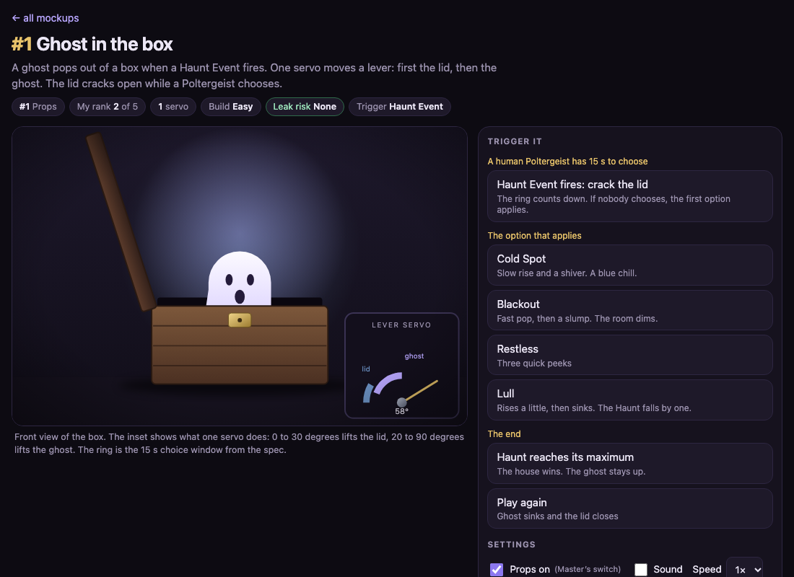
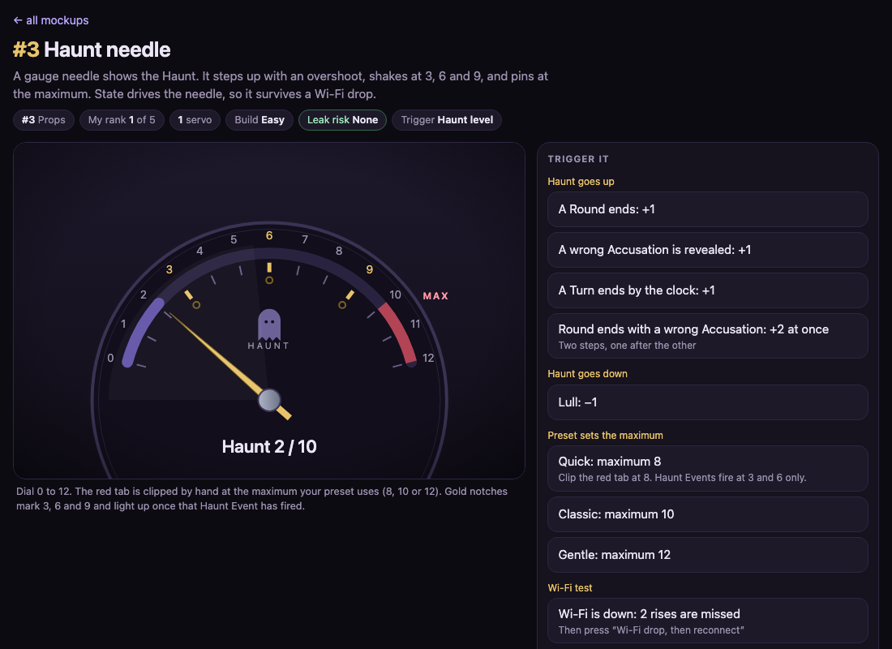
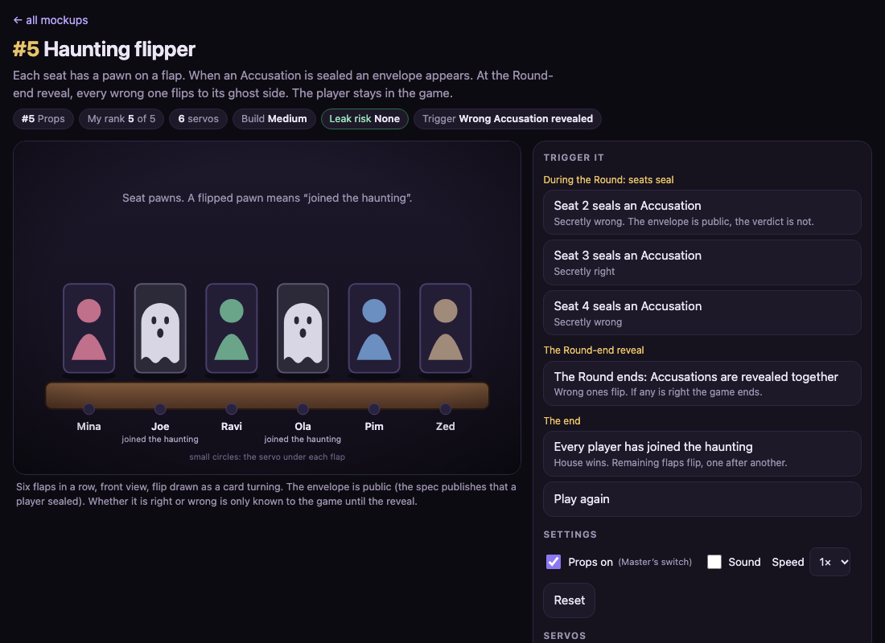
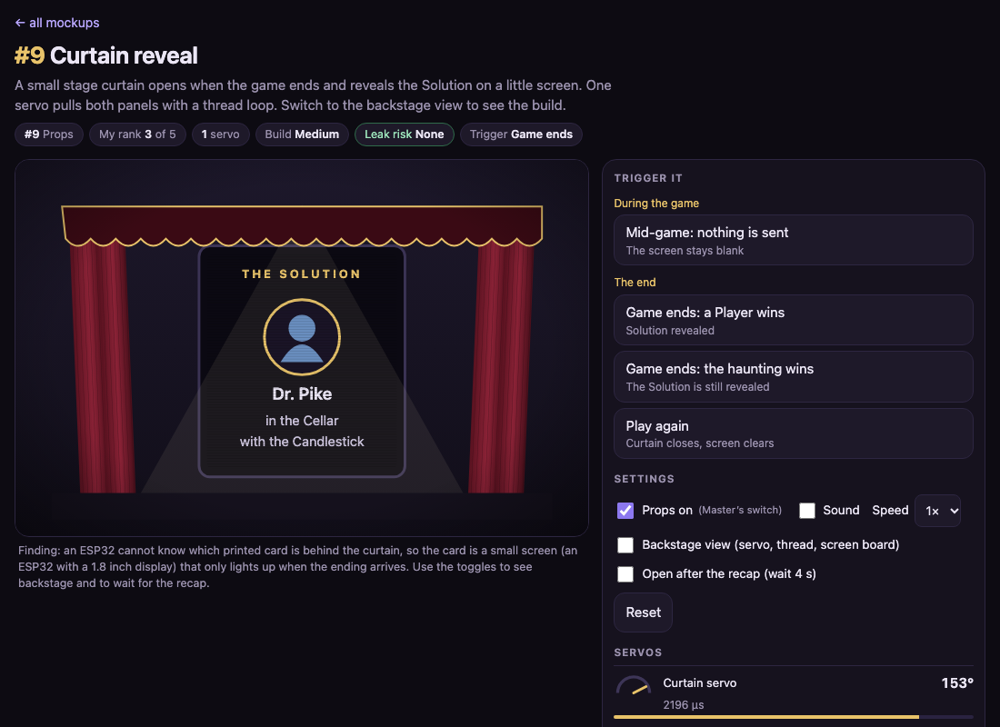
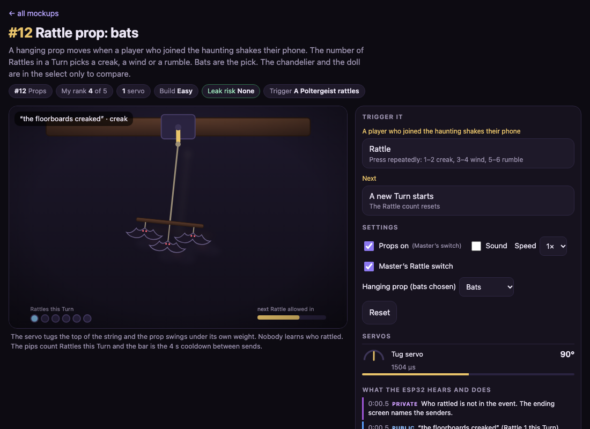

Each page is standalone: open it, press the buttons on the right, and watch what the ESP32 would do. These are drawings with the game rules built in. Nothing here is real hardware, and nothing is connected to the game.

A ghost pops out of a box when a Haunt Event fires. One servo moves a lever: first the lid, then the ghost. The lid cracks open while a Poltergeist chooses.

A gauge needle shows the Haunt. It steps up with an overshoot, shakes at 3, 6 and 9, and pins at the maximum. State drives the needle, so it survives a Wi-Fi drop.

Each seat has a pawn on a flap. When an Accusation is sealed an envelope appears. At the Round-end reveal, every wrong one flips to its ghost side. The player stays in the game.

A small stage curtain opens when the game ends and reveals the Solution on a little screen. One servo pulls both panels with a thread loop. Switch to the backstage view to see the build.

A hanging prop moves when a player who joined the haunting shakes their phone. The number of Rattles in a Turn picks a creak, a wind or a rumble. Bats are the pick. The chandelier and the doll are in the select only to compare.